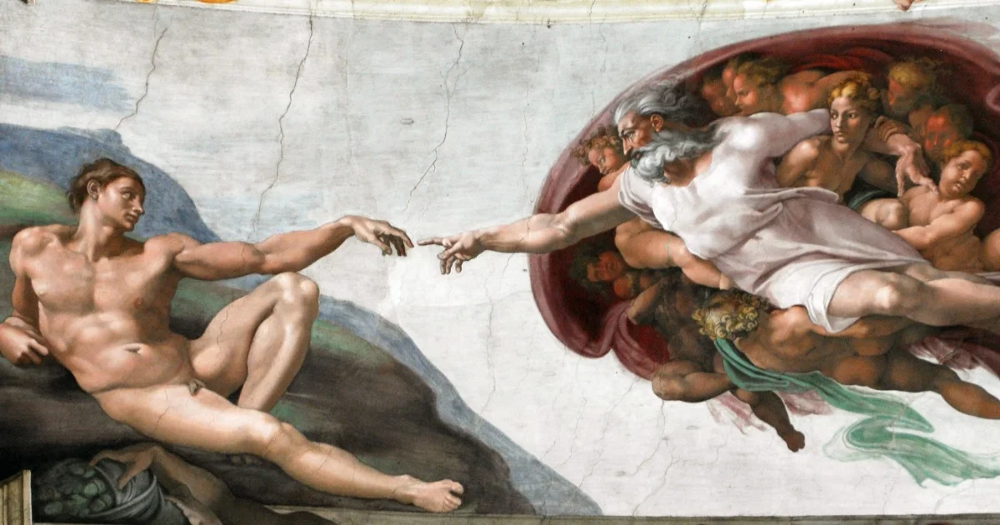
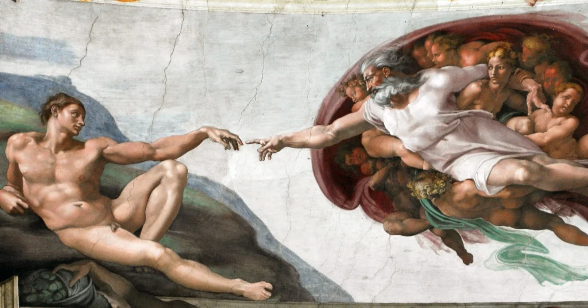

.png)

Mudanças ao tempo: Evolução das Profissões de Artistas e Ferreiros da Idade Média à Modernidade
Uma análise das transformações tecnológicas, sociais e econômicas que moldaram as profissões de ferreiro e artista ao longo dos séculos.
Na Idade Média, as profissões de artistas e ferreiros desempenhavam papéis distintos na sociedade. Os artistas medievais enfrentavam restrições temáticas e religiosas impostas pela Igreja e pela sociedade, resultando na criação de obras que frequentemente se concentravam em temas religiosos e representações idealizadas. Suas técnicas e materiais eram limitados em comparação com as possibilidades modernas, o que, por vezes, afetava a qualidade de suas produções artísticas.
 

Ferreiro da idade média
Criação de Adão, obra de Michelangelo
Enquanto isso, os ferreiros medievais desempenhavam um papel fundamental na produção de itens essenciais para a vida cotidiana, usando técnicas manuais e ferramentas simples. Seu conhecimento era transmitido oralmente e, embora tivessem um status social limitado, desempenhavam um papel crucial no suporte às comunidades locais.
Com a transição para a Idade Moderna, tanto artistas quanto ferreiros viram suas profissões evoluírem em resposta às mudanças sociais e tecnológicas. Os artistas modernos exploraram uma gama diversificada de estilos, técnicas e mídias, refletindo a complexidade do mundo contemporâneo, enquanto os ferreiros modernos adotaram tecnologia avançada e especialização para atender a um mercado global. Essas mudanças demonstram como ambas as profissões se adaptaram ao longo do tempo, mantendo sua relevância e valor na sociedade moderna.